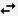
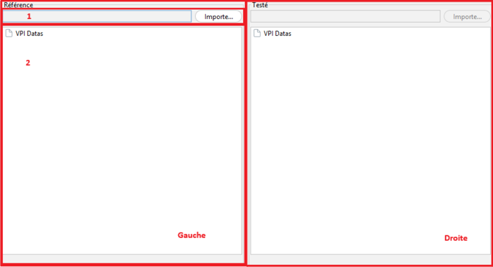

Interface utilisateur
Barre de navigation principale
La barre de navigation en haut de l'application est accessible depuis tous les modules.
- Comparaison — accède au module de comparaison de fichiers VPI/VPS.
- Analyse VPI — accède au module d'analyse d'un fichier VPI seul.
- Thème clair / sombre — bascule entre le thème clair et le thème sombre. La préférence est appliquée immédiatement à toute l'interface.
- Aide et documentation — ouvre cette fenêtre de documentation. Accessible depuis n'importe quel module.
- Paramètres — accès aux options de l'application (thème, quitter).
- Quitter — ferme l'application.
Barre d'outils du module Comparaison
La barre d'outils se trouve sous la barre de navigation, dans le module Comparaison uniquement.
- Afficher seulement les différences — masque les éléments identiques et ne conserve que les entrées présentant des écarts. Nécessite d'avoir lancé une comparaison au préalable. Ce bouton est désactivé tant que la comparaison n'a pas été effectuée.
- Synchroniser les deux affichages — lie le défilement vertical et l'expansion des nœuds des deux arbres. Actif par défaut. Cliquer à nouveau pour désynchroniser les vues.
 Générer un VPI/VPS — crée un nouveau fichier VPI/VPS à partir de l'arbre Testé (droite), en intégrant les données du VPS/VPI importé. Un sélecteur de dossier de destination s'ouvre avant la génération. Ce bouton n'est actif qu'après le chargement complet des deux fichiers.
Générer un VPI/VPS — crée un nouveau fichier VPI/VPS à partir de l'arbre Testé (droite), en intégrant les données du VPS/VPI importé. Un sélecteur de dossier de destination s'ouvre avant la génération. Ce bouton n'est actif qu'après le chargement complet des deux fichiers.
Intervertir — échange les fichiers chargés entre la zone Référence (gauche) et la zone Testée (droite). Les résultats de comparaison sont remis à zéro.
⚠ Attention : Les boutons Afficher seulement les différences et Générer un VPI/VPS sont désactivés tant que les deux fichiers ne sont pas entièrement chargés et comparés.
Zones d'affichage

- Zone de fichier. Importez un VPI/VPS en cliquant sur le bouton « Importer ». Le chemin du fichier sélectionné s'affiche dans le champ texte.
- Zone d'arbre. L'arbre des données du VPI s'affiche ici. Les nœuds différents sont colorés en rouge après la comparaison.
💡 Astuce :
La zone de gauche contient le VPI de référence.
La zone de droite contient le VPI testé.
Le bouton Importer de la zone Testée n'est disponible qu'après avoir chargé le fichier de référence.
Visualisation des filtres
Dans l'arbre, certains nœuds représentent des filtres VP.
Un double-clic sur un nœud filtre (ou clic droit → Détails du filtre) ouvre une fenêtre de visualisation dédiée :
- Si les deux VPI sont chargés et que le filtre existe dans les deux fichiers, une fenêtre de comparaison côte à côte s'affiche (non modale).
- Si un seul VPI est chargé ou si le filtre est absent de l'autre côté, une fenêtre simple (modale) affiche le filtre disponible.
Les conditions du filtre sont représentées avec un code couleur selon leur opérateur :
- Vert — égalité (=)
- Bleu — comparaison (<, >, ≤, ≥)
- Violet — appartenance (IN)
- Jaune/Ocre — texte (LIKE, contient…)
- Rouge — négation (NOT, !=)